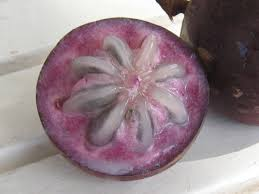
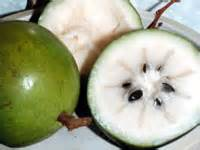

|  |
Purple star apples have a thick skin attached to a rind. The rind of this fruit is usually a dark purple color, and the pulp ranges from a light purplish color to white. The dark purple fruit is 6-12.5mm thick and have soft white milky sweet pulp. |
|  |
Green star apple has a thinner skin and rind. The rind and pulp of this fruit are both a milky white color. The leathery skin in green fruit is white and it is 3-5 mm thick with soft and sweet pulp. |